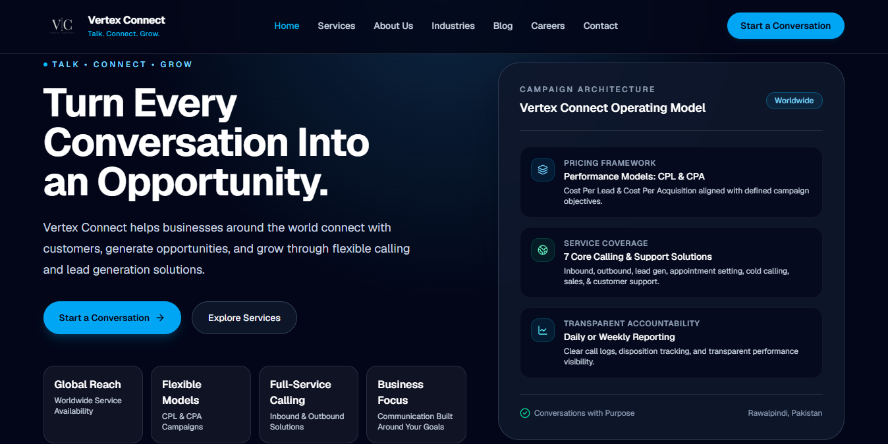
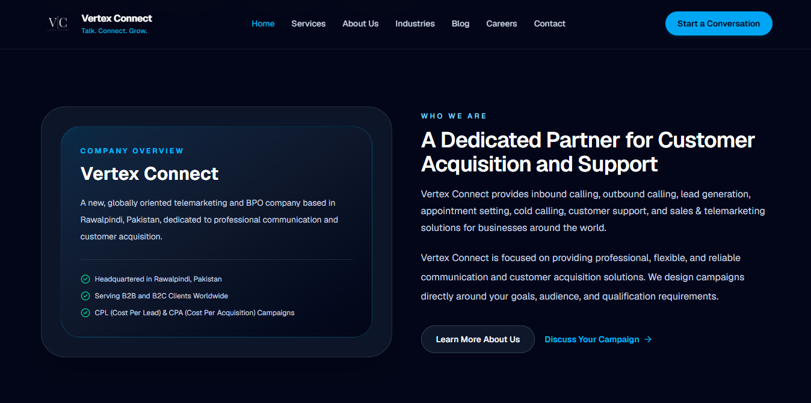
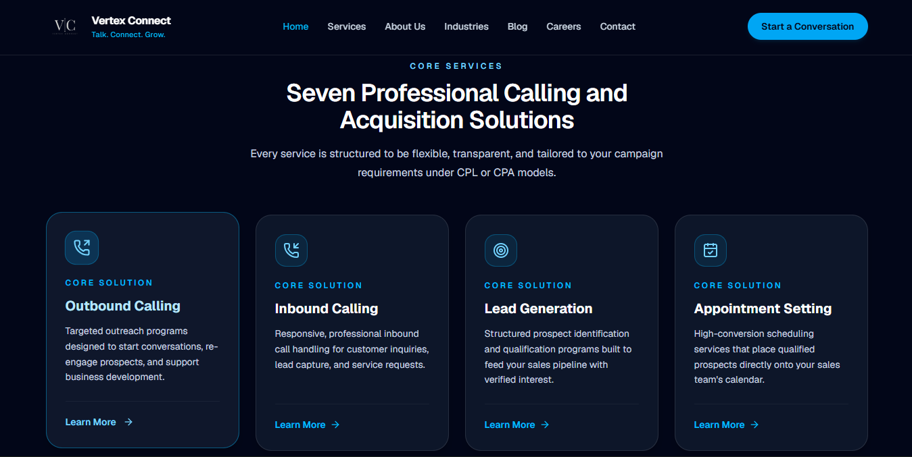
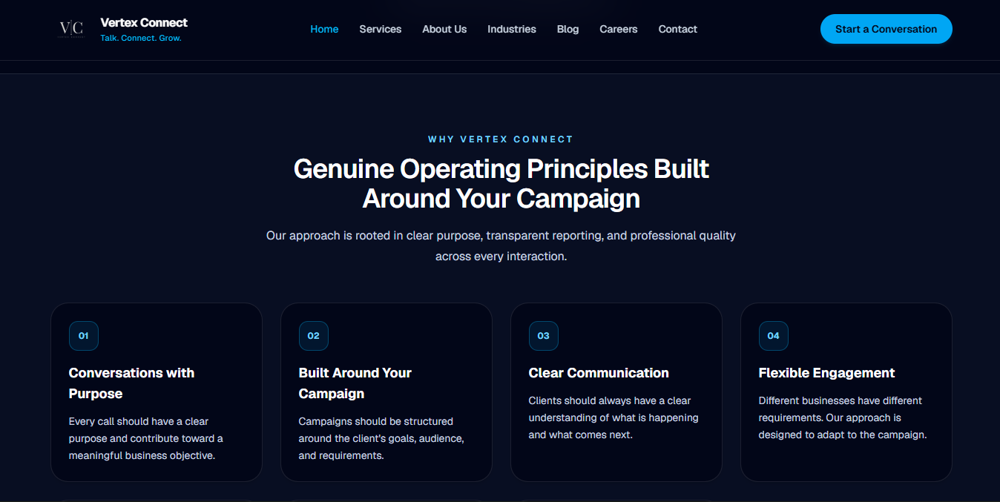
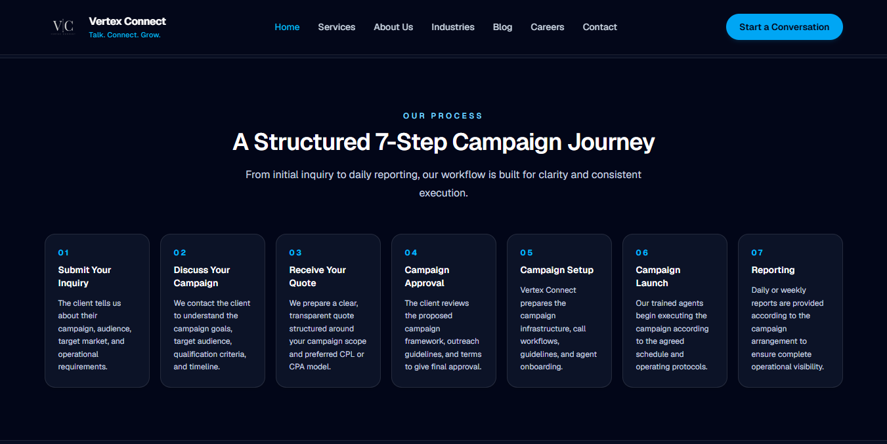
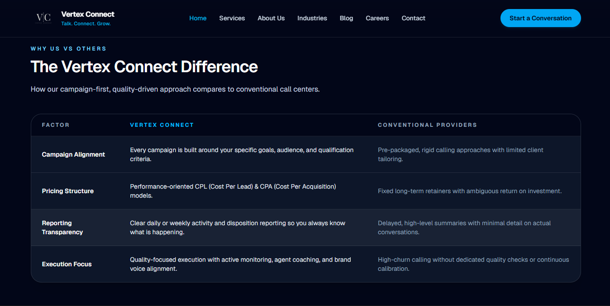
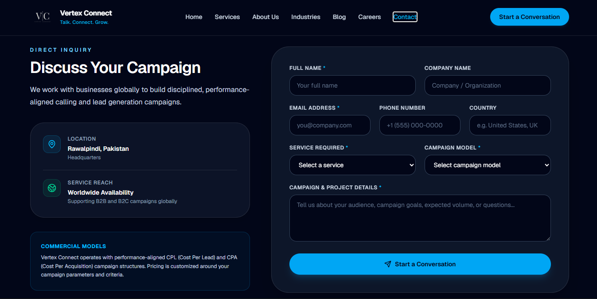

Vertex Connect
A professional digital presence for global business communication
Gallery

Overview
Vertex Connect needed a professional digital presence to introduce its telemarketing and business communication services to potential clients worldwide. The goal was to create a modern company website that communicates credibility, presents its services clearly, and establishes a strong foundation for business growth.
The Client's Challenge
As a growing telemarketing company, Vertex Connect needed a centralized online platform to explain its services, communicate its business value, and build trust with potential clients. The website needed to present the company professionally while making it easy for businesses to understand its offerings and get in touch.
What I Solved
I developed a professional website that introduces Vertex Connect, highlights its core services, and communicates its value to businesses. The solution focused on a modern interface, clear content structure, responsive design, intuitive navigation, and strategically placed calls to action.
How I Did It
I structured the website around a simple user journey: Discover, Explore Services, Build Trust, Connect. I focused on visual consistency, typography, spacing, content hierarchy, and responsive layouts to create a smooth browsing experience across different devices.
Services Presented
- Inbound Calling Services
- Outbound Calling Services
- Lead Generation
- Business Communication Solutions
- Performance-Based Campaign Models (CPL and CPA)
Challenges I Faced
Presenting multiple telemarketing services within a cohesive brand identity was one of the main challenges. I needed to ensure that the website communicated the company's capabilities clearly without overwhelming visitors, while maintaining a professional appearance suitable for an international audience.
Result
The completed website provides Vertex Connect with a dedicated digital presence, an organized overview of its services, and a professional platform for introducing the business to potential clients and partners worldwide.
Client Satisfaction
The website establishes a strong foundation for Vertex Connect's online identity, improves the clarity of its service presentation, and supports its goal of building business relationships in the global telemarketing industry.
Project Screenshots






Live Website: vertexconnect.co